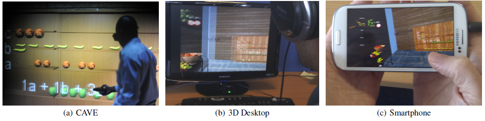
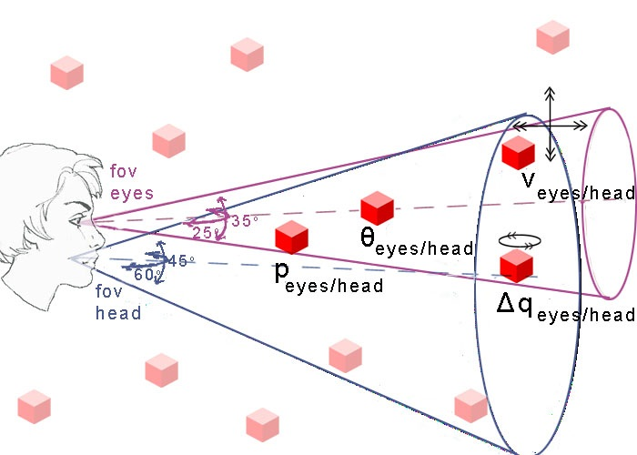

Visualization Director Clemson University
Projects
Click here for most recent projects
Learning in Virtual Environments
We designed an interactive 3D Maths (Algebra) simulation and visualized it on three different systems (CAVE, 3D Desktop and Smartphone).
Attention Model
This research models automatic attention behaviour using a saliency model that generates plausible targets for combined gaze and head motions. The attention model was integrated into an OpenSG application and the open-source Second Life client. Studies in both systems demonstrated a promising attention model that is not just believable and realistic but also adaptable to varying task, without any prior knowledge of the virtual scene.
EU FP7 Beaming Project
The EU Beaming project aims to give people a real sense of physically being in a remote location with other people, and vice versa, without actually physically travelling. When we interact with others we pay the most attention to the face because it conveys eye gaze, head movement, expressions and gestures and are used as a crucial channel of communication. Therefore, we propose the use of spherical displays to represent telepresent visitors' head at a remote location.
EU Presenccia Research
Group Collaboration in three heterogeneous systems: CAVE, XIM and Real-world
Presenccia in Second Life
EPSRC Eye Catching Project
The project aimed to support eye-gaze as a key interactional resource in collaboration. The virtual characters are controlled by human subjects in a cave-like facility (immersive virtual environment). Low-latency precision head-tracking allows distortion-free and lag-free movement through the virtual environment. Interaction with and navigation through the environment are achieved via a hand-held tracking unit. The eyes are controlled by head-mounted eye trackers.
PhD Research
Title "Eye Tracking: A Perceptual Interface for Content Based Image Retrieval"
Visual search experiments are devised to explore the feasibility of an eye gaze driven search mechanism. An eye tracking image retrieval interface together with precomputed similarity measures yield a significantly better performance than random selection using the same similarity information. Gaze parameters were explored to determine novel methods of inferring intention from users' gaze data.
Previous Project Supervision
- MSc - Modelling Attention in Autonomous Virtual Characters (led to a publication)
- MSc - Automatic Collision Avoidance for Virtual Characters using a Navigation Model
- BSc - Learning and Engagement in Immersive 3D Environments
- MSc – Comparison of CAVE, 3D Desktop & Smartphone for Visualising Learning Simulation